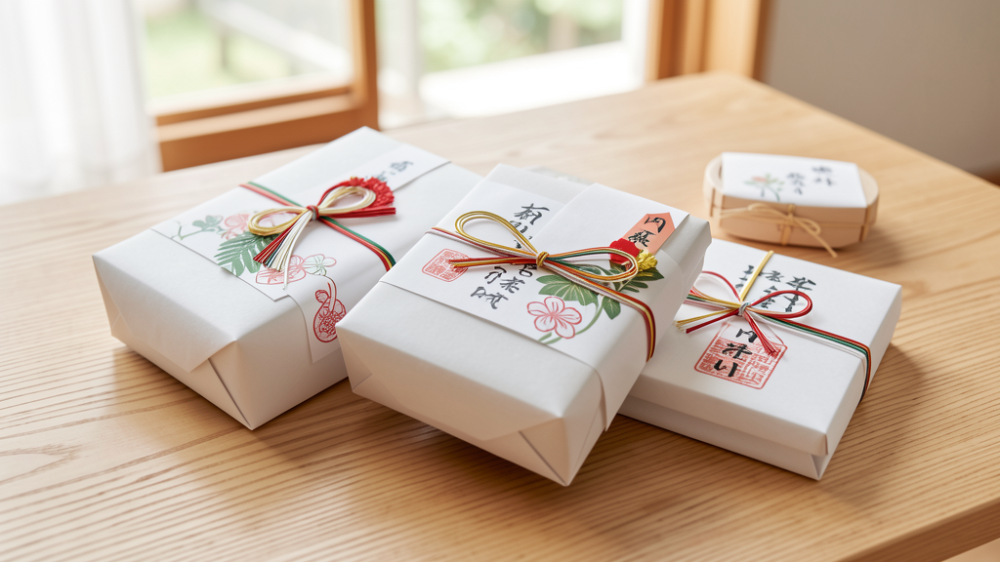

迷ったら「消耗品＋上の子にも少し」が強いです。
2人目は、赤ちゃん用品がすでに揃っていることが多め。おむつやギフトカードのように確実に使えるものへ寄せると、相手も受け取りやすくなります。
2人目ガイドを読む →2人目は、赤ちゃん用品がすでに揃っていることが多め。おむつやギフトカードのように確実に使えるものへ寄せると、相手も受け取りやすくなります。
2人目ガイドを読む →「困った」「助かった」の理由を、収納・サイズ・好み・2人目事情に分けて確認します。
商品リンクを入れる場合も、向いている家庭と避けたい家庭を同じ場所に書きます。
お下がり・上の子・消耗品・現金の渡し方に絞って深掘りします。
予算と贈りやすさで選びやすい候補を、2人目家庭の本音に寄せて並べました。
¥1,000 – ¥5,000
2人目でも使い道を相手に委ねられる棚。味気なさは、短い手書きメッセージでかなり和らぎます。
¥1,000 – ¥7,000
華やかさより実用性。サイズやメーカーだけ確認できれば、2人目にも強い候補です。
¥2,000 – ¥5,000
赤ちゃんだけでなく上の子にも届くと、家族全体で受け取りやすい贈り物になります。
¥3,000 – ¥30,000
便利だけれど、サプライズには不向き。欲しい型番が分かっている時に強い棚です。
ぬいぐるみ、服、スキンケア。悪気はなくても困られやすい理由を整理しました。
現金、消耗品、体験ギフト。ちゃんと使ってもらいやすいものを予算別に。
お下がりがある家庭に、何を贈ると負担になりにくいか。

内祝い相場、のし、お礼状。もらった後の迷いを減らすための基本をまとめました。